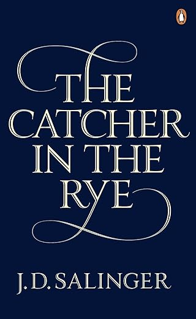
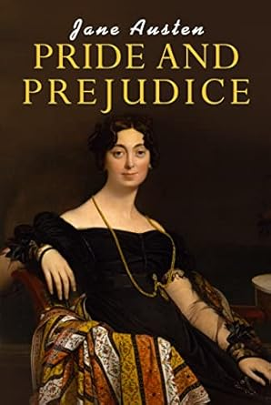

The Great Gatsby
A classic novel set in the 1920s, exploring themes of decadence, love, and the American Dream.

To Kill a Mockingbird
A powerful narrative about racial injustice and childhood innocence set in the American South.
1984
A dystopian novel about a totalitarian regime that uses surveillance, mind control, and oppression to maintain power.

The Catcher in the Rye
A coming-of-age novel about a disillusioned teenager's struggle with identity, belonging, and the adult world.

Pride and Prejudice
A timeless romance exploring love, class, and societal expectations in 19th-century England.